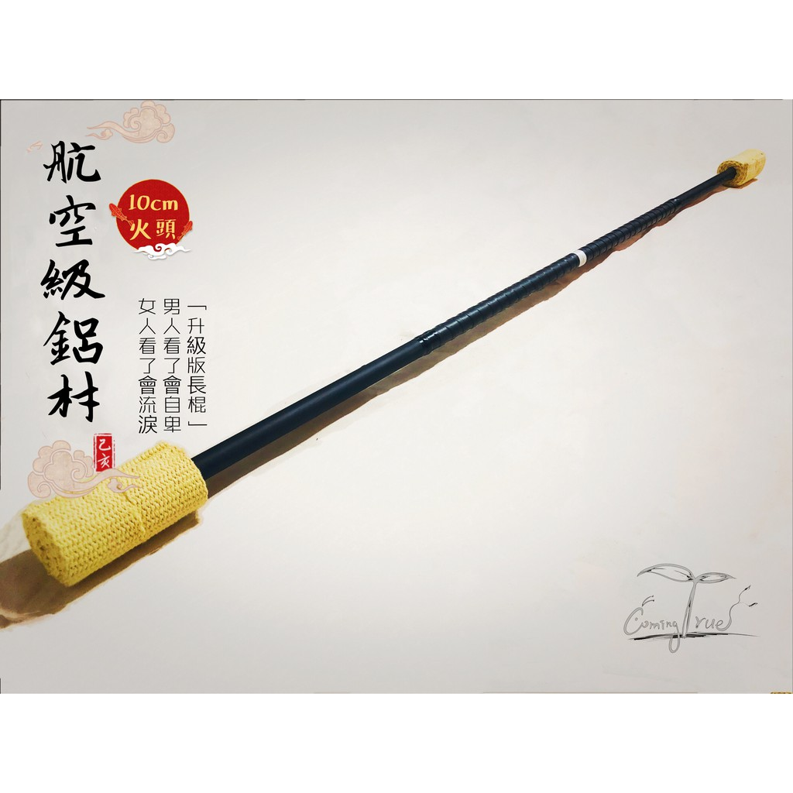
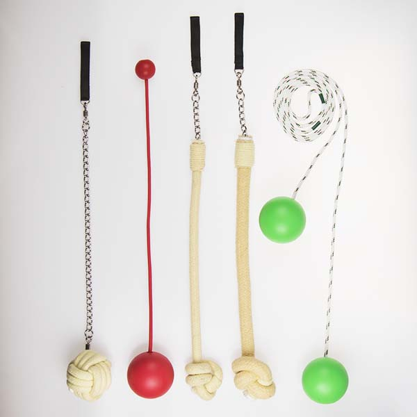

道具介紹
棍種類

長棍 : 130-150公分不等，常以個人身高為依據，棍子兩端為火頭。
短棍 : 80-95公分不等，常以臂長為依據，棍子兩端為火頭，以兩隻短棍的方式表演。
龍棍 : 棍體160-210公分不等，在棍的兩邊加上可以插入鋼纜的核心，鋼纜末端加上火頭，主要以接觸的方式表演。
火雙節棍：雙截棍上纏繞火布，特色為可以使用大量纏打激技巧。
火刀 : 刀狀的火具。
球(poi)種類

POI : 兩條短鐵鍊，鐵鍊一頭為火球一頭為手拿處，分左右手。
流星 : 一條長繩兩頭分別繫上一顆火球。
火鳳凰: 由流星衍生，結構為一條180~220公分的長繩兩端各連結一個80~100公分的小流星（接於中點），使用技巧較為困難。
火蛇 : 結構如POI，但以長條狀的火繩取代火球。
其他種類
小火棒 : 一個小火頭，鐵棒加環為握把。
火扇 : 成扇狀，扇緣分佈五個小火頭，或者連接成弧形的火頭。
火鞭 : 形狀如鞭子，可以經由甩打產生小爆炸的效果。
火呼拉圈：於呼拉圈外圈延伸加上火頭，技巧依舊以呼拉圈特技為主。
火立方：由100~140公分之鋁棍組合而成的正立方體，於棍上纏繞火布，效果驚人但也需要較大的表演空間。
火扯鈴：由扯鈴改造，在扯鈴中簍空部位加入火布。
返回